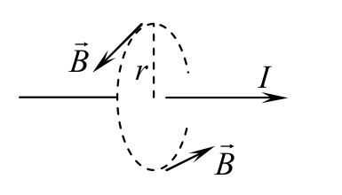
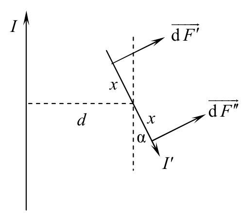
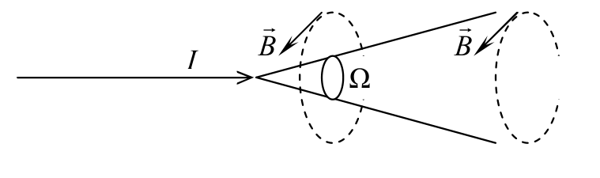
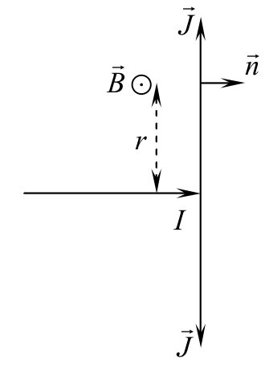
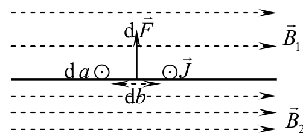
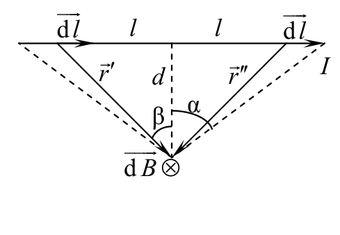
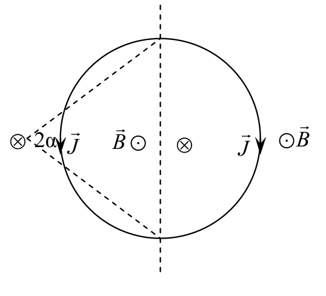

원문: Romanian Master of Physics 2012, PROBLEM No. 1 해설. 배점은 원문대로 pt로 표기한다.

상황의 대칭성으로부터, 도선을 중심으로 하는 반지름 r인 원형 경로를 따라 기자력(magnetomotive force)을 취한다.
\[\oint\vec B\,\mathrm{d}\vec l = 2\pi rB = \mu_0I \Rightarrow B = \frac{\mu_0I}{2\pi r}\]
막대의 중심으로부터 대칭적으로 거리 $x$에 놓인 두 요소 $\mathrm{d}x$를 생각하자. 이들에 작용하는 힘은 다음과 같다.
\[\mathrm{d}F' = \frac{\mu_0II'\,\mathrm{d}x}{2\pi\left(d-x\sin\alpha\right)}\,,\qquad \mathrm{d}F'' = \frac{\mu_0II'\,\mathrm{d}x}{2\pi\left(d+x\sin\alpha\right)}\]이들의 돌림힘(torque)의 합은 다음과 같다.
\[\mathrm{d}M = \left(\mathrm{d}F''-\mathrm{d}F'\right)x = -\frac{2\mu_0II'x^2\sin\alpha\,\mathrm{d}x}{2\pi\left(d^2-x^2\sin^2\alpha\right)}\]각이 매우 작을 때 전체 돌림힘은 다음과 같다.
\[M = \int_0^{L/2}-\frac{\mu_0II'\alpha x^2dx}{\pi d^2} = -\frac{\mu_0II'\alpha L^3}{24\pi d^2} = \frac{mL^2}{12}\ddot\alpha \Rightarrow T_\text{slant} = 2\pi d\sqrt{\frac{2\pi m}{\mu_0II'L}}\]
첫 번째 문항에서와 똑같이 원형 자기력선을 따라 경로 적분을 취하면 다음을 얻는다.
\[B_\text{IN} = 0\,,\qquad B_\text{OUT} = \frac{\mu_0I}{2\pi r}\]
위의 논증이 그대로 성립하며, 결과는 다음과 같다.
\[B_\text{WIRE SIDE} = \frac{\mu_0I}{2\pi r}\,,\qquad B_\text{OTHER SIDE} = 0\](WIRE SIDE: 도선 쪽, OTHER SIDE: 반대쪽)
평면에서 $J$ 방향으로 $\mathrm{d}a$, $J$에 수직인 방향으로 $\mathrm{d}b$의 크기를 갖는 작은 영역을 생각하자.

$B_0$을 외부 자기장, $B'$을 도체 평면이 만드는 자기장이라 하자.
\[\left.\begin{aligned}B_1 &= B_0-B'\\ B_2 &= B_0+B'\end{aligned}\right\}\Rightarrow B_0 = \frac{B_1+B_2}{2}\] \[\mathrm{d}F = \mathrm{d}I\cdot\mathrm{d}a\cdot B_0 = J\cdot\mathrm{d}b\cdot\mathrm{d}a\,\frac{B_1+B_2}{2} = \frac{B_2-B_1}{\mu_0}\,\mathrm{d}S\,\frac{B_1+B_2}{2} \Rightarrow p = \frac{\mathrm{d}F}{\mathrm{d}S} = \frac{B_2^2-B_1^2}{2\mu_0}\]앞에서와 마찬가지로,
\[B_\text{IN} = 0\,,\qquad B_\text{OUT} = \frac{\mu_0I}{2\pi r}\]이번에는 경로 적분이 반대 방향으로 진행한다.
\[B_\text{IN} = \frac{\mu_0I}{2\pi r}\,,\qquad B_\text{OUT} = 0\]
도선의 중심으로부터 대칭적으로 거리 $l$에 놓인 도선의 두 요소 $\mathrm{d}l$을 생각하자. 이들이 수직 이등분면(mediator plane)에 만드는 자기장 기여는 서로 같다.
\[\left|\mathrm{d}\vec B\right| = \frac{\mu_0I\,\mathrm{d}l\sin\left(90^\circ-\beta\right)}{4\pi r^2} = \frac{\mu_0I\,\mathrm{d}l}{4\pi d^2}\cos^3\beta\] \[l = d\tan\beta \Rightarrow dl = \frac{d}{\cos^2\beta}d\beta \Rightarrow \left|\mathrm{d}\vec B\right| = \frac{\mu_0I}{4\pi d}\cos\beta\,\mathrm{d}\beta\] \[B = 2\int_0^\alpha\frac{\mu_0I}{4\pi d}\cos\beta\,d\beta = \frac{\mu_0I}{2\pi d}\sin\beta\,\Big|_0^\alpha = \frac{\mu_0I}{\pi L}\,\frac{\sin^2\alpha}{\cos\alpha}\]
적도면 위의 한 점에서 보면, 구의 두 극을 잇는 축은 각 $2\alpha$로 보이며, $\tan\alpha = R/r$이다.
바깥에서 구는, 두 극을 직접 잇는 도선을 통해 한 극에서 다른 극으로 곧바로 흐르는 전류와 비슷하게 행동한다.
\[B_\text{OUT}(r) = \frac{\mu_0I}{2\pi}\,\frac{R}{r}\,\frac{1}{\sqrt{r^2+R^2}}\]안쪽에서 구는, 구의 두 극에 연결되어 반대 방향으로 전류 $I$를 나르는 두 개의 반무한 직선 도체와 비슷하게 행동한다.
\[B_\text{IN}(r) = \frac{\mu_0I}{2\pi r}\left(1-\frac{R}{\sqrt{r^2+R^2}}\right)\]